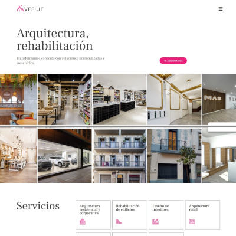
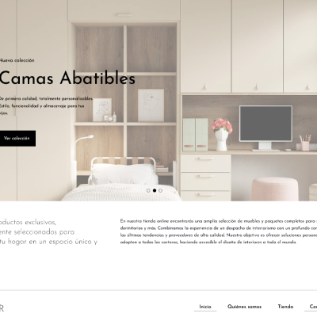
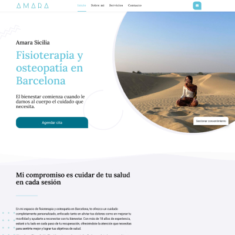
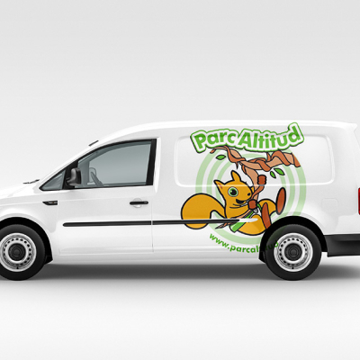
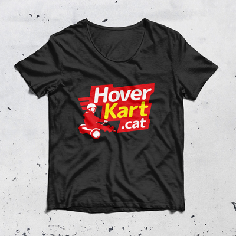
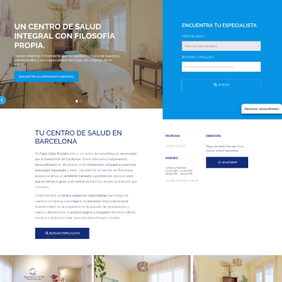

Sigo un plan basado en la escucha para crear diseños funcionales y coherentes. Pienso siempre en las personas: busco que cada interfaz sea clara, intuitiva y útil para cumplir su propósito.

Creo diseños claros y funcionales basados en la escucha. Me enfoco en las personas que los usan, para que cada interfaz sea intuitiva y eficaz. Busco crear experiencias que transmitan calma y confianza.

Entiendo el propósito del diseño y uso las animaciones de forma equilibrada para mejorar la experiencia web. Desarrollo sitios adaptativos, en WordPress y con interactividad en JavaScript.
Durante mi trayectoria he participado en proyectos de diseño corporativo, publicidad y desarrollo de páginas web. A través del diseño, busco conectar a las personas, crear valor y compartir aquello que nace de las emociones y las ideas.
Si necesita más información sobre casos concretos o desea comentar posibles oportunidades de
trabajo, no dude en ponerse en contacto conmigo en la dirección que figura a continuación. Le
responderé a la mayor brevedad posible.
coconsmy[at]gmail.com